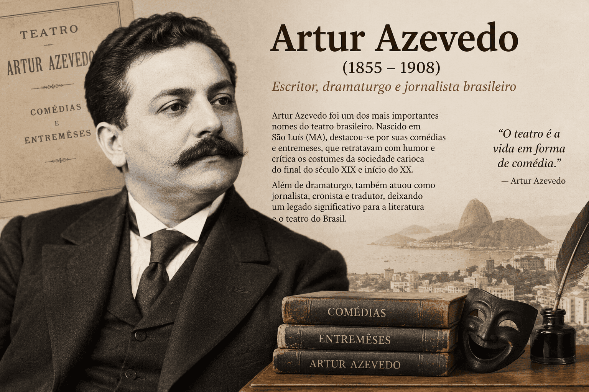

Artur Azevedo: biografia, principais obras e importância para o teatro brasileiro
Artur Nabantino Gonçalves de Azevedo, conhecido como Artur Azevedo, foi dramaturgo, jornalista, contista, poeta, tradutor e crítico teatral. Nascido em São Luís do Maranhão, em 7 de julho de 1855, participou intensamente da vida cultural brasileira na passagem do século XIX para o XX, tornando-se uma referência para compreender as relações entre teatro, imprensa e sociedade.
Sua dramaturgia transforma situações cotidianas em conflitos de grande eficácia cênica: propostas de casamento, interesses financeiros, ambições profissionais, encontros imprevistos e tentativas de ascensão social movimentam personagens que precisam negociar entre aquilo que desejam e aquilo que podem declarar publicamente. O humor surge, muitas vezes, da distância entre essas duas dimensões.
Em obras como Amor por Anexins, A Capital Federal e O Mambembe, a comicidade depende tanto da organização do diálogo quanto da atuação, do gesto, da música e do conhecimento que o público possui sobre as situações representadas. Já em O Escravocrata, escrito com Urbano Duarte, o conflito dramático intervém diretamente na discussão sobre a escravidão.
Compreender sua importância exige considerar esse conjunto de atividades. Artur escrevia para o palco, acompanhava espetáculos, discutia repertórios e defendia condições para o desenvolvimento da atividade teatral. Sua trajetória permite estudar o teatro como criação artística, prática profissional e instituição cultural.

Artur Azevedo em resumo
- Nome completo: Artur Nabantino Gonçalves de Azevedo.
- Nascimento: 7 de julho de 1855, em São Luís, Maranhão.
- Falecimento: 22 de outubro de 1908, no Rio de Janeiro.
- Atuação: teatro, jornalismo, crítica teatral, conto, poesia, tradução e adaptação.
- Relação familiar: irmão de Aluísio Azevedo.
- Formas teatrais: comédia de costumes, revista, burleta e drama.
- Obras de referência: Amor por Anexins, O Escravocrata, A Capital Federal, O Mambembe e O Dote.
- Questões recorrentes: casamento, dinheiro, aparência social, vida urbana e trabalho artístico.
- Atuação institucional: fundador da Academia Brasileira de Letras e defensor da construção do Teatro Municipal do Rio de Janeiro.
Artur ou Arthur Azevedo?
As duas grafias aparecem em fontes históricas e institucionais. A Academia Brasileira de Letras utiliza Artur Azevedo, enquanto edições antigas e registros de acervos também apresentam Arthur Azevedo. Essa variação deve ser considerada nas pesquisas bibliográficas para que documentos relevantes não sejam excluídos da busca.
Nesta página, adota-se Artur Azevedo no texto principal. A manutenção de “arthur” no endereço e no nome da imagem não altera a identificação do autor.
Da formação maranhense à vida cultural do Rio de Janeiro
A relação de Artur Azevedo com o teatro começou em São Luís. Ainda jovem, participou de experiências de representação e escreveu peças, desenvolvendo uma familiaridade com o palco que acompanharia sua produção posterior. A escrita dramática esteve, desde cedo, ligada à prática de apresentar um texto diante de espectadores.
Essa circunstância ajuda a compreender uma característica de sua obra: a atenção ao efeito produzido pela cena. Uma fala precisa responder à anterior, preparar um equívoco ou provocar uma reação; uma entrada pode interromper uma conversa no momento decisivo; um gesto pode contradizer aquilo que a personagem afirma. A construção teatral se desenvolve nessa relação entre palavra e ação.
Em 1873, o escritor mudou-se para o Rio de Janeiro. Na então capital do Império, conciliou o serviço público com a atividade literária e jornalística. Sua atuação atravessaria o final da Monarquia e os primeiros anos da República.
São Luís e Rio de Janeiro cumprem, portanto, funções diferentes em sua trajetória: a primeira está ligada à formação e às experiências iniciais; a segunda, à consolidação de sua presença no circuito profissional do teatro e da imprensa.
Como situar Artur Azevedo na literatura brasileira?
O estudo de Artur Azevedo exige cuidado com classificações que organizam os escritores exclusivamente por escolas literárias. Sua produção se desenvolve em um período de convivência e disputa entre diferentes tendências estéticas, mas a compreensão de suas peças depende especialmente da história dos gêneros teatrais e das condições de representação.
Ser contemporâneo do Realismo, do Naturalismo e do Parnasianismo não torna toda a sua obra representante de um desses movimentos. Tampouco o parentesco com Aluísio Azevedo permite transferir automaticamente para sua dramaturgia as características dos romances naturalistas do irmão.
Uma abordagem mais precisa considera as tradições da comédia, o desenvolvimento do teatro musicado, a circulação de repertórios estrangeiros e as expectativas dos espectadores. Nesse contexto, Artur participa da continuidade e da transformação da comédia brasileira.
A comédia de costumes e a organização do conflito
A comédia de costumes explora comportamentos e convenções reconhecíveis em determinada sociedade. Entretanto, reconhecer hábitos é apenas uma parte da experiência cômica. O conflito aparece quando uma personagem tenta agir dentro dessas convenções, utilizá-las em benefício próprio ou escapar das consequências de sua conduta.
O casamento, por exemplo, pode ser apresentado como realização amorosa e, simultaneamente, como negociação econômica. A respeitabilidade pode depender de uma aparência que os acontecimentos ameaçam desfazer. A educação e a elegância podem funcionar como formas de distinção, mesmo quando encobrem oportunismo ou ignorância.
O riso nasce da exposição dessas diferenças. O público percebe aquilo que uma personagem tenta esconder ou acompanha uma tentativa cada vez mais difícil de preservar uma imagem social. Por isso, o estudo da comicidade deve identificar tanto o mecanismo empregado quanto o comportamento colocado em evidência.
Tipos sociais e personagens
Um tipo social concentra características que o público reconhece: o pretendente interessado, o indivíduo vaidoso, o homem que ostenta refinamento ou a pessoa deslumbrada com a cidade. Essa concentração facilita a identificação e permite que a ação se desenvolva rapidamente.
Isso não significa que todas as personagens sejam intercambiáveis. A análise deve observar como cada figura reage às circunstâncias, que recursos possui e de que maneira suas escolhas alteram a ação. Reconhecer um tipo é um ponto de partida para compreender sua função dramática.
Comédia, revista e burleta: distinções e aproximações
Os termos utilizados para classificar peças do período não constituem divisões absolutamente rígidas. Uma obra pode combinar sátira dos costumes, música, comentários sobre a atualidade e desenvolvimento de uma intriga. Ainda assim, algumas distinções ajudam a compreender sua organização.
| Forma teatral | Princípio de organização | O que observar na leitura |
|---|---|---|
| Comédia de costumes | Conflitos cômicos relacionados a hábitos, valores e convenções sociais. | Interesses das personagens, aparências e consequências das ações. |
| Revista de ano | Retomada satírica de acontecimentos e assuntos recentes, com sucessão de quadros e presença musical. | Referências à atualidade e formas de ligação entre os episódios. |
| Burleta | Articulação entre intriga cômica, diálogo e números musicais. | Relação entre desenvolvimento do enredo e composição do espetáculo. |
| Drama | Tratamento de conflitos graves, que podem envolver família, moral e organização social. | Decisões, revelações e consequências que intensificam o conflito. |
A música como parte da dramaturgia
Em uma peça musicada, o canto pode apresentar uma personagem, ampliar uma situação, reunir diferentes participantes ou estabelecer um comentário sobre a ação. A passagem do diálogo para a música também modifica a relação com o público: o tempo do acontecimento pode ser suspenso para destacar uma atitude ou produzir um efeito coletivo.
Por isso, retirar os números musicais da análise pode alterar a compreensão da obra. Mesmo quando o leitor não dispõe da partitura, pode observar quem canta, em que momento e com qual função na sequência dramática.
Amor por Anexins: linguagem, repetição e negociação amorosa
Amor por Anexins organiza sua comicidade em torno da relação entre Isaías e Inês. Ele pretende casar-se com a viúva e se expressa recorrendo continuamente a provérbios e ditos populares. O modo de falar torna-se um traço decisivo de sua presença em cena.
O anexim é uma expressão sentenciosa, próxima do provérbio, que apresenta uma conclusão sobre a experiência ou uma orientação de conduta. Na peça, o emprego insistente dessas fórmulas permite observar como a linguagem pronta interfere no diálogo.
Por que os provérbios produzem humor?
O reconhecimento de um ditado cria uma expectativa: o público sabe como a fórmula costuma terminar e em quais situações é empregada. A repetição pode intensificar essa expectativa até que a fala pareça incapaz de abandonar um repertório previamente organizado.
Assim, o recurso atua em duas direções. Caracteriza o falante e condiciona suas possibilidades de resposta. Uma declaração que deveria parecer espontânea pode soar impessoal quando depende de uma sentença conhecida; uma tentativa de demonstrar sabedoria pode evidenciar rigidez ou inadequação.
Em cena, esse efeito depende de ritmo e atuação. A pausa anterior ao ditado, a rapidez da resposta e a reação da interlocutora podem transformar uma expressão familiar em motivo de impaciência, surpresa ou riso.
Casamento e interesse material
A disputa amorosa também coloca em questão a relação entre preferência afetiva e segurança econômica. A mudança de avaliação de Inês pode ser examinada a partir das condições concretas que orientam sua escolha, sem reduzir a personagem a uma qualidade moral isolada.
A comédia permite, assim, investigar duas formas de convenção: as fórmulas pelas quais se fala e as expectativas pelas quais se organiza o casamento. O diálogo entre essas dimensões torna a peça mais complexa do que uma simples coleção de provérbios engraçados.
A Capital Federal: cidade, consumo e aparência social
A Capital Federal, de 1897, constrói sua ação a partir do encontro entre uma família do interior e a vida no Rio de Janeiro. A busca por Gouveia, ligado ao projeto de casamento de Quinota, coloca as personagens em circulação e favorece o cruzamento de interesses.
O deslocamento permite observar como os indivíduos se apresentam em ambientes cujas regras não dominam inteiramente. A cidade oferece oportunidades e prazeres, mas também impõe custos, expectativas e formas de exposição.
A abertura no hotel
O início da peça apresenta um hotel movimentado por hóspedes, empregados e solicitações simultâneas. A organização da cena permite examinar o contraste entre a imagem de excelência promovida pelo estabelecimento e as dificuldades de atender às demandas.
O espaço de hospedagem pode ser lido como uma síntese da circulação urbana: pessoas chegam, solicitam serviços, comparam experiências e afirmam preferências. A promessa de conforto depende de trabalho, administração e dinheiro, dimensões que a movimentação cênica torna visíveis.
Interior e capital: limites da oposição
O contraste entre campo e cidade favorece a comicidade, mas não deve ser transformado em uma explicação automática segundo a qual todo habitante do interior seria virtuoso e todo citadino seria corrupto. É necessário observar as decisões de cada personagem.
Uma leitura produtiva investiga como o contato com novas possibilidades modifica comportamentos. O ambiente pode oferecer ocasiões para desejos anteriormente contidos, e a tentativa de atribuir toda responsabilidade à cidade pode ocultar a participação dos próprios indivíduos.
A pergunta central deixa de ser apenas “como é a capital?” e passa a incluir “o que cada personagem procura nela?”. Essa mudança de enfoque permite relacionar espaço urbano e ação dramática.
Consumo e reconhecimento
Em uma análise da peça, objetos, serviços, roupas e ambientes podem ser examinados como sinais de posição social. Seu valor não depende exclusivamente da utilidade: eles também participam da maneira como uma personagem deseja ser vista.
A ostentação se torna especialmente interessante para a comédia quando existe distância entre a imagem pretendida e as condições de sustentá-la. A aparência precisa ser mantida por ações que podem comprometer relações, recursos e reputações.
Linguagem e representação social
As diferenças entre as falas ajudam a construir as personagens e a marcar contrastes de origem e posição. Contudo, a grafia de uma fala popular não deve ser tomada como transcrição linguística neutra. Trata-se de uma escolha de representação, submetida aos objetivos do espetáculo e às convenções de seu tempo.
O leitor pode perguntar quem recebe uma fala marcada graficamente, quem fala de acordo com padrões de prestígio e quais comportamentos são associados a essas diferenças. Essa observação permite analisar tanto a eficácia teatral quanto os estereótipos que a obra mobiliza.
Leitura crítica: representar uma variedade linguística de maneira cômica não demonstra inferioridade de seus falantes. É necessário distinguir a diversidade real da língua e a seleção de traços realizada pela dramaturgia.
O Mambembe: o teatro como profissão e experiência coletiva
O Mambembe, de 1904, escrito em colaboração com José Piza, desloca o foco para o próprio trabalho teatral. A companhia itinerante permite abordar circulação, aprendizado, dificuldades materiais e relações entre artistas.
O termo “mambembe”, nesse contexto, designa uma companhia que se desloca para apresentar espetáculos em diferentes localidades, adaptando-se às condições disponíveis. O movimento possibilita o encontro com públicos diversos, mas também amplia a exposição à incerteza.
Vocação, gênero e respeitabilidade
No início da peça, o desejo de Laudelina de seguir a carreira teatral encontra resistência. A distinção entre representar em um ambiente familiar e tornar-se atriz profissional evidencia que a avaliação de uma atividade depende do lugar social atribuído a quem a exerce.
A questão ultrapassa a existência de talento. Envolve expectativas sobre o futuro de uma mulher, possibilidades de sustento e julgamentos de respeitabilidade. O conflito permite examinar como escolhas profissionais são condicionadas por convenções familiares e sociais.
Frazão e a defesa da atividade teatral
Ao apresentar a vida itinerante, Frazão associa dificuldades e possibilidades de formação. Seu discurso permite investigar como a experiência profissional pode ser narrada de modo persuasivo: reconhecer obstáculos não impede a construção de uma imagem atraente da atividade.
O leitor deve considerar a posição de quem fala e o objetivo daquela conversa. A defesa do teatro participa da ação e busca produzir uma decisão. Não se trata de um comentário colocado fora do conflito.
Metateatro e distância entre vida e representação
A peça constitui uma oportunidade para estudar o metateatro: o teatro que se volta para seus próprios procedimentos, práticas e convenções. Esse movimento pode ocorrer pela presença de atores como personagens, pela discussão sobre representação ou pela circulação de falas de outras peças dentro da ação.
Quando uma personagem utiliza uma fala teatral para expressar uma situação pessoal, o público acompanha dois planos: o sentido daquela fala no repertório citado e seu novo emprego. A comicidade pode surgir justamente da aproximação ou do desajuste entre ambos.
Arte e condições materiais
A análise de O Mambembe pode relacionar a defesa da arte às condições necessárias para realizá-la. O espetáculo depende de trabalho coletivo, disponibilidade de espaços, deslocamento e encontro com espectadores.
Essa perspectiva evita reduzir o artista à inspiração individual. A criação se realiza em uma rede de atividades e negociações, e o funcionamento dessa rede pode tornar-se parte do próprio assunto da obra.
O Escravocrata: abolicionismo e conflito familiar
O Escravocrata, publicado em 1884, foi escrito por Artur Azevedo e Urbano Duarte. O texto havia sido submetido à censura com o título A Família Salazar. Seu prefácio explicita a intenção dos autores de contribuir para o combate à escravidão.
O conflito se desenvolve no espaço familiar e envolve relações ocultas que ameaçam a ordem sustentada por Salazar. A oposição entre a posição pública do escravocrata e a realidade de sua própria casa dá força à denúncia dramática.
O funcionamento da revelação
Em uma trama organizada por segredos, a informação é distribuída de maneira desigual. Algumas personagens conhecem fatos que outras ignoram; o público acompanha essa diferença e antecipa as consequências de uma descoberta.
Esse mecanismo permite relacionar conhecimento e poder. Revelar uma informação pode alterar a posição de uma personagem, comprometer sua autoridade ou tornar insustentável uma aparência. O segredo deixa de ser apenas um elemento de suspense e participa da organização do conflito social.
Os limites de uma ordem baseada na propriedade
A peça pode ser analisada a partir da contradição entre relações humanas e relações de domínio. O espaço doméstico, aparentemente protegido, está atravessado pela instituição escravista. Dessa forma, família, afeto, autoridade e propriedade não aparecem como esferas independentes.
Também é necessário distinguir o posicionamento abolicionista dos autores e os pressupostos presentes na construção das personagens. Uma obra que combate a escravidão continua pertencendo a seu tempo e pode mobilizar convenções e estereótipos que exigem análise crítica.
Para aprofundar: identifique quem pode decidir sobre a vida de outra pessoa, quais justificativas apresenta e como a ação expõe as consequências desse poder. Essa observação aproxima a análise formal da interpretação histórica.
Como Artur Azevedo constrói a comicidade?
Afirmar que uma peça possui humor é insuficiente para explicar seu funcionamento. A análise precisa reconhecer os recursos que organizam a cena e o comportamento que se torna objeto do riso.
Repetição e variação
Uma palavra, um gesto ou uma situação pode reaparecer e criar expectativa. O efeito depende tanto da repetição quanto da mudança de circunstância. O público reconhece o padrão, mas acompanha como ele se torna inadequado, exagerado ou difícil de sustentar.
Equívoco e informação desigual
Quando duas personagens interpretam a mesma situação de maneiras diferentes, suas ações podem ampliar o mal-entendido. Se o público conhece a origem do erro, acompanha a distância entre o que elas acreditam e o que efetivamente acontece.
Aparte e cumplicidade com o espectador
O aparte apresenta uma fala que, pela convenção teatral, não é ouvida por determinadas personagens. Ele permite revelar uma intenção escondida ou comentar uma situação sem interromper diretamente a relação estabelecida em cena.
O contraste entre a fala pública e o comentário reservado pode produzir cumplicidade com o espectador. Ao conhecer a intenção oculta, o público passa a interpretar de outra maneira as declarações seguintes.
Rubricas, gesto e tempo cênico
As rubricas oferecem indicações sobre ações, movimentos, entonações e organização do espaço. Uma aproximação, uma hesitação ou uma saída pode modificar o sentido de uma fala aparentemente simples.
Por isso, a leitura de uma peça exige imaginar a realização da ação. O texto dramático articula aquilo que é dito e aquilo que acontece enquanto se fala.
Jornalismo, conto e crítica teatral
A imprensa foi um espaço importante de atuação de Artur Azevedo. Nesse ambiente, a escrita dialoga com acontecimentos recentes, repertórios compartilhados e a atenção de leitores que acompanham a vida cultural.
Nos contos, é produtivo observar a seleção de situações, a economia da apresentação e a construção de expectativas. Uma narrativa breve precisa organizar cuidadosamente as informações para que uma mudança de perspectiva ou uma descoberta adquira força.
Já a crítica teatral permite discutir a mediação entre espetáculo e público. Ao avaliar uma representação, o crítico seleciona critérios, estabelece comparações e contribui para a circulação de determinadas ideias sobre o que o teatro deve realizar.
Artur ocupava uma posição particularmente significativa porque também escrevia para o palco. Essa participação em diferentes frentes permite investigar convergências e tensões entre suas propostas como crítico e suas escolhas como dramaturgo.
Tradução e adaptação: circulação entre repertórios
A atividade teatral envolve a circulação de textos entre línguas, públicos e contextos. Traduzir e adaptar exigem decisões sobre expressões, referências culturais, duração das cenas e possibilidades de representação.
Uma comparação entre versões pode perguntar quais elementos foram mantidos, suprimidos ou transformados. A mudança de uma referência local, por exemplo, pode alterar o reconhecimento de uma situação pelo público e, consequentemente, sua eficácia cômica.
Reconhecer a existência de adaptação não resolve antecipadamente a avaliação da obra. É necessário examinar o trabalho realizado e os efeitos das escolhas feitas.
Teatro popular, valor artístico e bilheteria
A oposição entre teatro popular e teatro de valor artístico costuma produzir simplificações. Música, comicidade e reconhecimento imediato pelo público podem participar de uma elaboração formal complexa. Da mesma forma, prestígio cultural não garante, por si só, eficácia cênica.
O espetáculo também depende de condições econômicas. Contratar artistas, manter espaços e realizar apresentações exige recursos. A bilheteria participa dessa organização, mas não constitui uma medida suficiente da relevância histórica ou estética de uma peça.
Ao estudar Artur Azevedo, é necessário considerar a relação entre escolhas artísticas, convenções dos gêneros e expectativas dos espectadores. Essa relação envolve negociação e pode produzir tanto invenção quanto repetição de fórmulas.
Instituições e defesa da atividade teatral
Artur Azevedo participou da fundação da Academia Brasileira de Letras e vinculou a cadeira número 29 ao patrono Martins Pena. Essa escolha permite reconhecer a importância atribuída à tradição da comédia brasileira.
Sua defesa da construção do Teatro Municipal do Rio de Janeiro também integra sua atuação cultural. A existência de um edifício, entretanto, não esgota o desenvolvimento do teatro: formação de artistas, condições de trabalho, repertório, crítica e acesso dos espectadores são dimensões igualmente relevantes.
A importância institucional do escritor pode ser compreendida pela articulação dessas atividades. Criar peças, discutir espetáculos e reivindicar condições para sua realização são formas diferentes de intervir na vida teatral.
Artur e Aluísio Azevedo: diferenças de projeto literário
O parentesco e a origem maranhense aproximam os irmãos, mas suas obras exigem instrumentos de análise específicos. A organização de uma cena teatral não funciona da mesma maneira que a construção de um romance.
| Aspecto | Artur Azevedo | Aluísio Azevedo |
|---|---|---|
| Produção de maior projeção | Dramaturgia, acompanhada de atuação no conto e na imprensa. | Romances como O Mulato, Casa de Pensão e O Cortiço. |
| Organização da representação | Diálogos, rubricas, ações, música e condições de encenação. | Narração, descrição, composição dos ambientes e organização do enredo. |
| Relação com tendências literárias | Requer atenção à história da comédia e do teatro musicado. | Possui obras centrais para o estudo do Naturalismo brasileiro. |
| Cuidado interpretativo | Não reduzir a comicidade a entretenimento sem elaboração. | Não substituir a análise de cada romance por uma lista de características naturalistas. |
Principais obras e possibilidades de análise
| Obra | Eixo de estudo | Pergunta interpretativa |
|---|---|---|
| Amor por Anexins | Linguagem proverbial e negociação amorosa. | Como as fórmulas prontas caracterizam o falante e interferem no diálogo? |
| O Escravocrata | Abolicionismo e conflito familiar. | Como a distribuição de informações e a revelação dos segredos alteram as relações de poder? |
| A Capital Federal | Vida urbana, consumo e aparência social. | Como o contato com a capital modifica as ações e expõe os interesses das personagens? |
| O Mambembe | Profissão teatral e metateatro. | Como a peça relaciona vocação artística, convenções sociais e condições materiais? |
| O Dote | Casamento e organização econômica da vida doméstica. | Como as expectativas materiais participam da construção do conflito conjugal? |
Como estudar Artur Azevedo para provas e análises literárias
Uma questão com texto dramático pode exigir a identificação do alvo da sátira, da função de uma rubrica ou da diferença entre o que uma personagem declara e aquilo que pretende. O conhecimento sobre o autor orienta a leitura, mas a resposta precisa apoiar-se na passagem apresentada.
- Identifique a situação: reconheça quem participa da cena, onde ela ocorre e qual conflito está em andamento.
- Observe os objetivos: procure compreender o que cada personagem pretende obter.
- Compare informações: verifique se público e personagens sabem as mesmas coisas.
- Leia as rubricas: movimentos e entonações podem contradizer ou modificar o sentido das falas.
- Reconheça o mecanismo cômico: repetição, equívoco, aparte, contraste ou quebra de expectativa.
- Explique seu efeito: mostre como o recurso expõe um interesse, um comportamento ou uma convenção.
- Considere a encenação: imagine a participação do gesto, da música e do tempo de atuação.
Erros comuns de interpretação
- Confundir autor e personagem: uma fala pode ser apresentada justamente para tornar visível uma atitude criticável.
- Tratar a comédia como reprodução neutra da sociedade: a representação seleciona e reorganiza comportamentos.
- Ignorar as rubricas: o sentido depende da articulação entre fala e ação.
- Reduzir o humor à presença de palavras engraçadas: a organização da situação também produz comicidade.
- Desconsiderar a música: números cantados podem cumprir funções importantes no espetáculo.
- Aplicar automaticamente o Naturalismo: a dramaturgia de Artur exige atenção às suas formas específicas.
- Confundir representação linguística e inferioridade social: diferenças de fala não autorizam julgamentos sobre a capacidade de seus falantes.
- Esquecer as colaborações: O Escravocrata foi escrito com Urbano Duarte; O Mambembe, com José Piza.
Síntese interpretativa
O estudo de Artur Azevedo ganha profundidade quando relaciona o funcionamento da cena, os interesses das personagens e as convenções sociais representadas. A comicidade se constrói por escolhas de linguagem, distribuição de informações, movimentos e contrastes que precisam ser examinados em cada passagem.
Sua obra também permite compreender o teatro como atividade coletiva. Entre o texto e o encontro com o público existem artistas, espaços, recursos e formas de organização. Essa dimensão ajuda a explicar por que dramaturgia, crítica e atuação institucional aparecem tão próximas em sua trajetória.
Conteúdos relacionados
- Realismo no Brasil: contexto, características e autores
- Naturalismo no Brasil: características, autores e obras
- Parnasianismo no Brasil: características, autores e obras
- Pré-Modernismo no Brasil: contexto, autores e características
- Machado de Assis: biografia, obras e características literárias
- Aluísio Azevedo: biografia, obras e características literárias
Referências
- ACADEMIA BRASILEIRA DE LETRAS. Artur Azevedo — Biografia. Disponível em: Acessar.
- ACADEMIA BRASILEIRA DE LETRAS. Artur Azevedo — Bibliografia. Disponível em: Acessar.
- BIBLIOTECA NACIONAL DIGITAL. Artur Azevedo. Dossiê digital. Disponível em: Acessar.
- MAGALDI, Sábato. Artur Azevedo. Rio de Janeiro: Academia Brasileira de Letras, 2009.
- GUENZBURGER, Gustavo. O caso Mambembe: a redenção da antirrevista no Teatro Municipal. Revista Interfaces. Disponível em: Acessar.
- FUNARTE. Programa da peça O Mambembe. Disponível em: Acessar.
- THEATRO MUNICIPAL DO RIO DE JANEIRO. Informações históricas institucionais. Inauguração em 14 de julho de 1909.
- AZEVEDO, Artur. A Capital Federal. 1897.
- AZEVEDO, Artur; DUARTE, Urbano. O Escravocrata. 1884.
Explore Outros Conteúdos
Continue seus estudos acessando outras seções do site Mestre Kira: